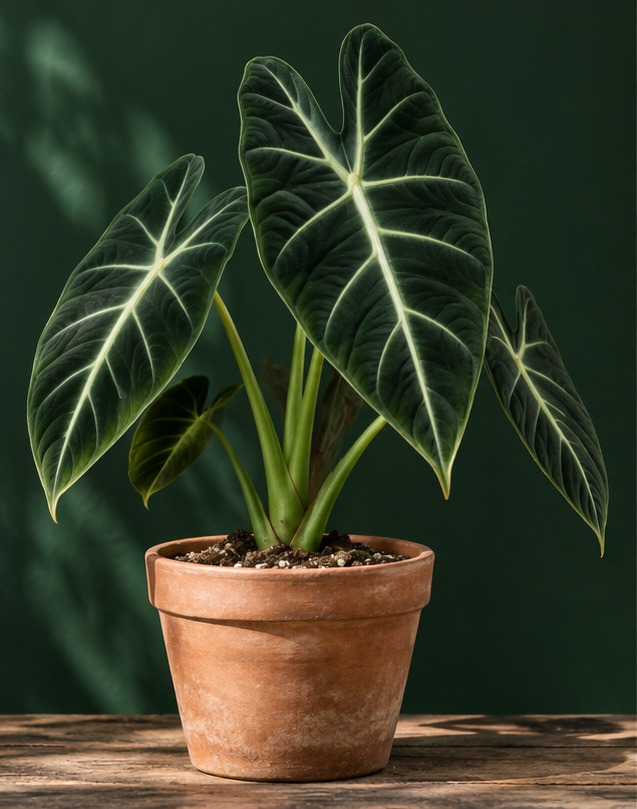
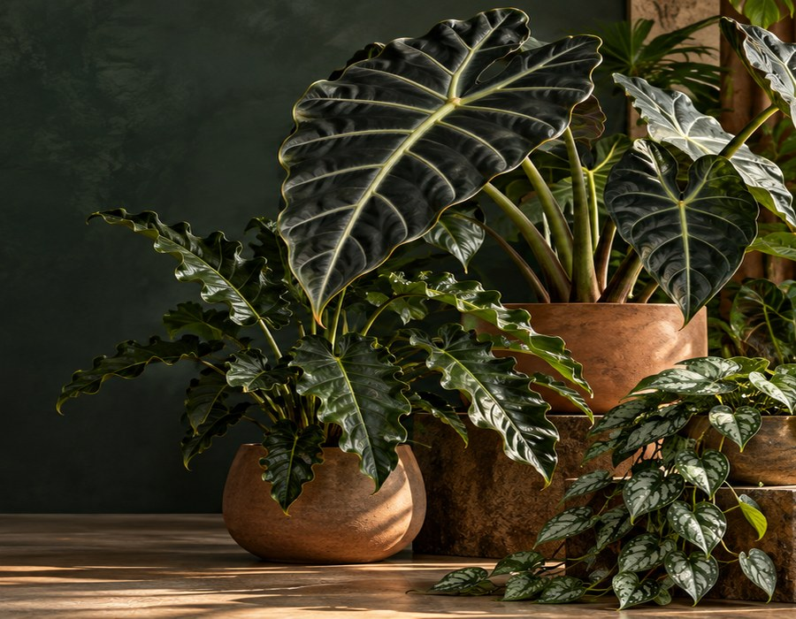
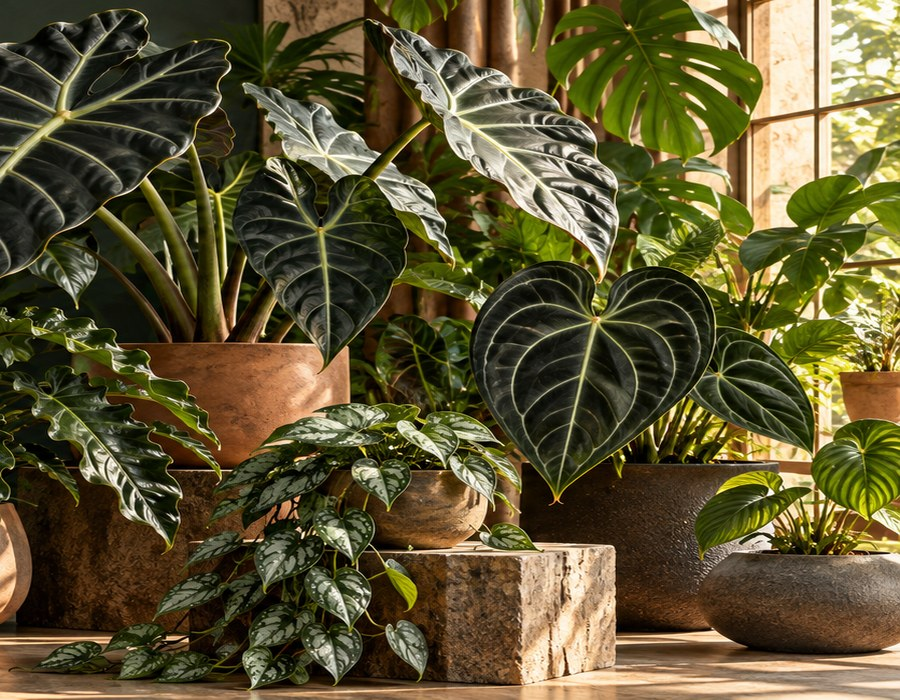
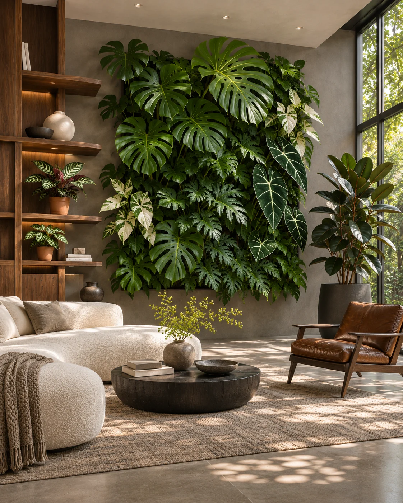
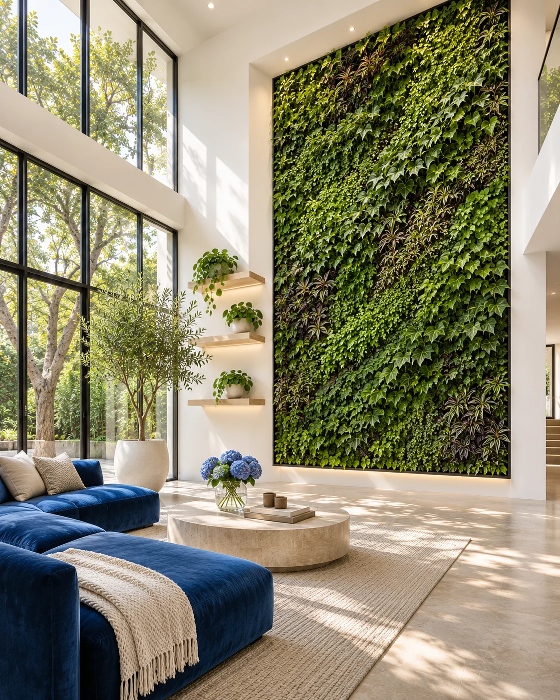
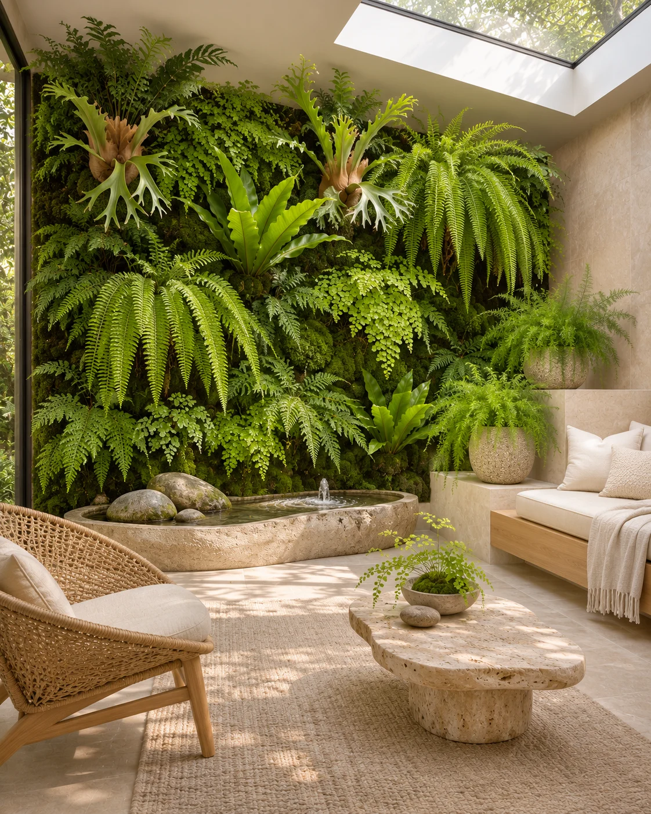

ХИТ
Alocasia Frydek
бархатные листья · 35–45 см
от 8 900 ₽ТРОПИЧЕСКАЯ БОТАНИКА · МОСКВА
Пусть за окном меняются сезоны, а дома остаются тропики. Соберите свой зелёный уголок из необычных растений — от первого бархатного листа до пышных домашних джунглей.
Выбрать своё растение →01 — О НАС

ALOCASIA FRYDEK · ЖИВАЯ КОЛЛЕКЦИЯОт первого листа — к вашей домашней коллекции
Мы собираем растения, которые становятся частью интерьера и вашей повседневной жизни. Бережно выращиваем, честно рассказываем о каждом виде и помогаем ему прижиться именно у вас.
Познакомиться с нами ↗02 — КОЛЛЕКЦИЯ
бархатные листья · 35–45 см
от 8 900 ₽
вариегатная · 45–60 см
от 15 500 ₽
текстурные листья · 30–40 см
от 7 200 ₽03 — УСЛУГИ
От одного выразительного растения до полноценной фитостены — подберём, спроектируем и позаботимся.
Обсудить проект →Проектируем живые композиции под свет, площадь и ритм вашего пространства.
↗Находим растение, которое будет радовать, а не требовать невозможного.
↗Диагностика, пересадка и понятная схема ухода без лишней теории.
↗

